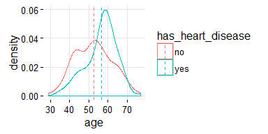
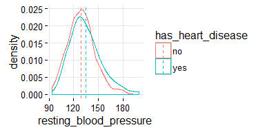
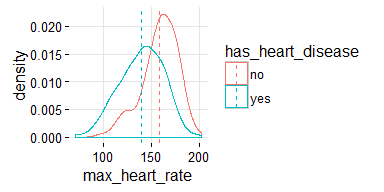
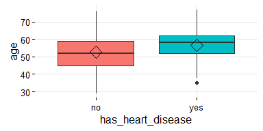
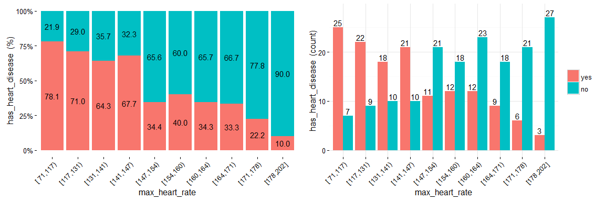
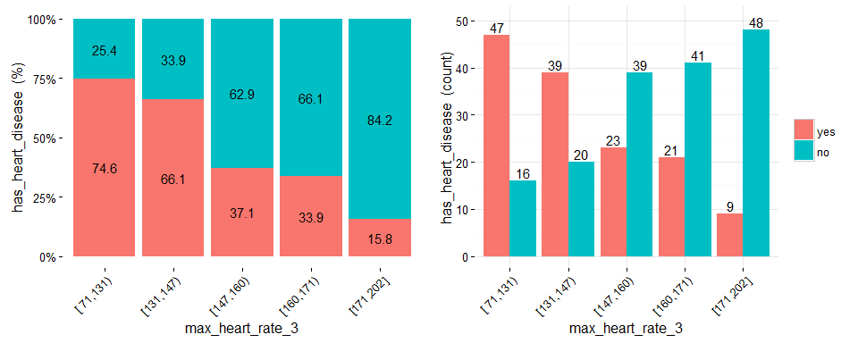

Selecting Best Variables (DataViz)
Selecting Best Variables (DataViz)
Introduction
This vignette will cover three types of plots which aim to understand what are the most correlated numeric variables against a target variable.
- Overview:
- Analysis purpose: To identify if the input variable is a good/bad predictor through visual analysis.
- General purpose: To explain the decision of including -or not- a variable to a model to a non-analyst person.
Constraint: Target variable must contain only 2 values. If it has NA values, they will be removed.
Note: Please note there are many ways for selecting best variables to build a model, here are some based on visual analysis.
- Key in mind this when using Histograms & BoxPlots They are nice to see when the variable:
- Has a good spread -not concentrated on a bunch of 3, 4..6.. different values, and
- It has not really extreme outliers… (this point can be treated with
prep_outliersfunction present in this package)
Part A) Target Profiling with Histograms
## Loading funModeling !
suppressMessages(library(funModeling))
plotar(data=heart_disease, str_input="age", str_target="has_heart_disease", plot_type = "histdens")
Dashed-line represents variable mean.
Density histograms are nice to visualize the general shape of a numeric distribution.
This general shape is calculated based on a technique called Kernel Smoother, its general idea is to reduce high/low peaks (noise) present in near points/bars by estimating the function that describes the points. Here some pictures to illustrate the concept: https://en.wikipedia.org/wiki/Kernel_smoother
Something similar is what an statistical test sees: they measured how different the curves are reflecting it in some statistics (like the p-value), in order to give to the analyst, a reliable information to determine if the curves have -for example- the same mean.
A.1) Hist. Dens.: Good vs. Bad variable
plotar(data=heart_disease, str=c('resting_blood_pressure', 'max_heart_rate'), str_target="has_heart_disease", plot_type = "histdens")
And the model will see the same… if the curves are quite overlapped, like it is in resting_blood_pressure, then it’s not a good predictor as if they were more spaced -like max_heart_rate.
Part B) Target Profiling with Boxplots
plotar(data=heart_disease, str_input="age", str_target="has_heart_disease", plot_type = "boxplot")
Rhomboid near the mean line represents the median.

When to use boxplots? When you need to analyze different percentiles across the classes to predict. Note this is a powerful technique since the bias produced due to outliers doesn’t affect as much as it does to the mean.
B.1) Boxplot: Good vs. Bad variable
plotar(data=heart_disease, str=c(‘max_heart_rate’, ‘resting_blood_pressure’), str_target=“has_heart_disease”, plot_type = “boxplot”)
max_heart_rate is cleraly a better predictor than resting_blood_pressure.
As a general rule, a variable will rank as more important if boxplots are not aligned horizontally.
Statistical tests: percentiles are another used feature used by them in order to determine -for example- if means across groups are or not the same.
Exporting plots
plotar and cross_plot can handle from 1 to N input variables, and plots generated by them can be easily exported in high quality with parameter path_out.
plotar(data=heart_disease, str=c('max_heart_rate', 'resting_blood_pressure'), str_target="has_heart_disease", plot_type = "boxplot", path_out = "my_awsome_folder")
Part C) Target Profiling with cross_plot
Example C.2: Crossing with numerical variables
Numerical variables should be binned in order to plot them with an histogram, otherwise the plot is not showing information, as it can be seen here:
Equal frequency binning
There is a function included in the package (inherited from Hmisc package) : equal_freq, which returns the bins/buckets based on the equal frequency criteria. Which is -or tries to- have the same quantity of rows per bin.
For numerical variables, cross_plot has by default the auto_binning=T, which automatically calls the equal_freq function with n_bins=10 (or the closest number).
cross_plot(heart_disease, str_input="max_heart_rate", str_target="has_heart_disease")
Example C.3: Manual binning
If you don’t want the automatic binning, then set the auto_binning=F in cross_plot function.
For example, creating oldpeak_2 based on equal frequency, with 3 buckets.
heart_disease$oldpeak_2=equal_freq(var=heart_disease$oldpeak, n_bins = 3)
summary(heart_disease$oldpeak_2)## [0.0,0.2) [0.2,1.5) [1.5,6.2]
## 106 107 90Plotting the binned variable (auto_binning = F):
cross_oldpeak_2=cross_plot(heart_disease, str_input="oldpeak_2", str_target="has_heart_disease", auto_binning = F)
Conclusion
This new plot based on oldpeak_2 shows clearly how: the likelihood of having heart disease increases as oldpeak_2 increases as well. Again, it gives an order to the data.
Example C.4: Noise reducing
Converting variable max_heart_rate into a one of 10 bins:
heart_disease$max_heart_rate_2=equal_freq(var=heart_disease$max_heart_rate, n_bins = 10)
cross_plot(heart_disease, str_input="max_heart_rate_2", str_target="has_heart_disease")At a first glance, max_heart_rate_2 shows a negative and linear relationship, however there are some buckets which add noise to the relationship. For example, the bucket (141, 146] has a higher heart disease rate than the previous bucket, and it was expected to have a lower. This could be noise in data.
Key note: One way to reduce the noise (at the cost of losing some information), is to split with less bins:
heart_disease$max_heart_rate_3=equal_freq(var=heart_disease$max_heart_rate, n_bins = 5)
cross_plot(heart_disease, str_input="max_heart_rate_3", str_target="has_heart_disease")
Conclusion: As it can be seen, now the relationship is much clean and clear. Bucket ‘N’ has a higher rate than ‘N+1’, which implies a negative correlation.
How about saving the cross_plot result into a folder? Just set the parameter path_out with the folder you want -It creates a new one if it doesn’t exists-.
cross_plot(heart_disease, str_input="max_heart_rate_3", str_target="has_heart_disease", path_out="my_plots")It creates the folder my_plots into the working directory.
Example C.4: cross_plot on multiple variables
Imagine you want to run cross_plot for several variables at the same time. To achieve this goal just define a vector containing the variable names.
If you want to analyze these 3 variables:
vars_to_analyze=c("age", "oldpeak", "max_heart_rate")cross_plot(data=heart_disease, str_target="has_heart_disease", str_input=vars_to_analyze)
Part D) Correlation table against target variable
What it does? It retrieves the well known R statistic -which measures linear correlation for all numeric variables (skipping the string ones).
correlation_table(data=heart_disease, str_target="has_heart_disease")## Variable has_heart_disease
## 1 has_heart_disease 1.00
## 2 heart_disease_severity 0.83
## 3 num_vessels_flour 0.46
## 4 oldpeak 0.42
## 5 slope 0.34
## 6 age 0.23
## 7 resting_blood_pressure 0.15
## 8 serum_cholestoral 0.08
## 9 max_heart_rate -0.42R statistic goes from 1 positive correlation to -1 negative correlation. A value around 0 implies no correlation. Squaring this number returns the R squared statistic (aka R2), which goes from 0 no correlation to 1 high correlation.
C.1) R2 bias problem
R statistic is highly influenced by outliers and non-linear relationships.
Outliers can be treated with prep_outliers function, present in this package.
Take a look at the Anscombe’s quartet. These 4 relationships are quite different, but all of them have the same R2: 0.816.

Last plot, and more info about correlation can be found at: Correlation and dependence
Part E) Final notes:
- https://en.wikipedia.org/wiki/Correlation_does_not_imply_causation
cross_plotis good to visualize linear relationships, giving it a hint on non-linear relationships.- Cleaning the variables help the model to better capture information’s data.